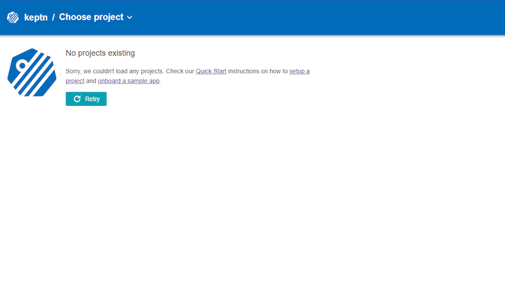

In this tutorial we are going to learn how to install Keptn in your Kubernetes cluster running in Elastic Kubernetes Services (EKS) in AWS.
Please download and install the following tools if you do not have them installed on your machine already.
We are going to setup a Kubernetes cluster in EKS.
eksctl.m5.2xlarge nodeeksctl create cluster --version=1.15 --name=keptn-cluster --node-type=m5.2xlarge --nodes=1 --region=eu-west-3
Find a full compatibility matrix for supported Kubernetes versions here.
Every release of Keptn provides binaries for the Keptn CLI. These binaries are available for Linux, macOS, and Windows.
There are multiple options how to get the Keptn CLI on your machine.
curl -sL https://get.keptn.sh | sudo -E bash
keptn binary in the unpacked directorychmod +x keptn), and move it to the desired destination (e.g. mv keptn /usr/local/bin/keptn)Now, you should be able to run the Keptn CLI:
keptn --help
.\keptn.exe --help
To install the latest release of Keptn in your EKS cluster, execute the keptn install command with the platform flag specifying the target platform you would like to install Keptn on.
keptn install --platform=eks
If you have a custom domain or cannot use xip.io (e.g., when running Keptn on EKS with an ELB (Elastic Load Balancer) from AWS), there is the CLI command keptn configure domain to configure Keptn for your custom domain:
keptn configure domain YOUR_DOMAIN
As an example: keptn configure domain mydemo.mydomain.com
In the Kubernetes cluster, this command creates the keptn, keptn-datastore, and istio-system namespace. While istio-system contains all Istio related resources, keptn and keptn-datastore contain the complete infrastructure to run Keptn.
Now that you have installed Keptn you can take a look at its user interace aka the Keptn's Bridge.
Expose the bridge via the following command to be able to access on localhost:
kubectl port-forward svc/bridge -n keptn 9000:8080
Open a browser and navigate to http://localhost:9000 to take look. The bridge will be empty at this point but when using Keptn it will be populated with events.

Now that you have successfully installed Keptn, you can explore other tutorials!
Here are some possibilities: